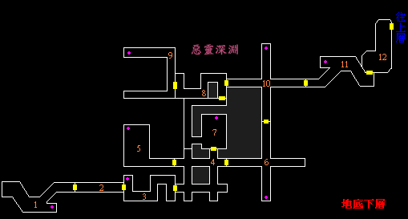
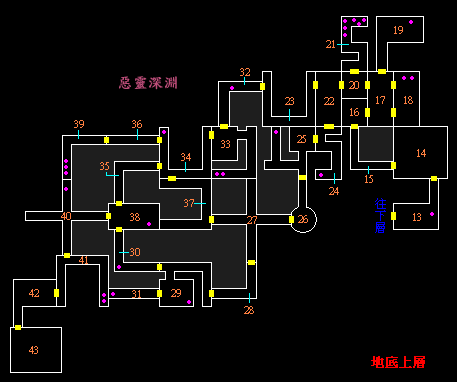

|
惡靈古堡∼生存者２-----地圖攻略∼Dungeon Mode地底
|
| 地圖解說 地圖上所標示的部分道具會隨著Mission關卡的不同而有些許改變
 １藥草 ３手槍 ４這裡的僵屍是打不完的，趕快前往下一個房間吧（任務３時僵屍不會重生） ５麥林手槍 / 榴彈槍 ６手槍 ７來福槍 / 機關槍 ９寶石 １０散彈槍 １１手槍。小心配置有手槍的地方安排有一隻Bander埋伏 １２強制和沙蟲的戰鬥，建議拿麥林手槍迎戰節省時間
 １３急救箱。這裡兩個管子裡會不斷跑出蜘蛛，將管子打爆才是好方法 １８散彈槍、麥林手槍 / 榴彈槍。兩隻武器拿了之後，後面的箱子分別會跳出兩隻獵人，可以面對箱子拿 武器，以免被偷襲 １９急救箱 ２１綠色藥草 x ３、散彈槍、Pz對甲硫彈EX、寶石 ２２中間隔著的一層鐵捲門，用槍射擊門即可打開 ２４麥林手槍 / 榴彈槍 ２５火藥十字弓 ２９麥林手槍 / 榴彈槍。失火的地方要儘快離開，會耗損生命力 ３０急救箱 ３１腰包（可增加地底所有任務中的武器攜帶數） ３２藥草 ３３來福槍 / 機關槍、寶石。小心迎面的Bander。 ３４手槍 ３８火箭砲 ３９來福槍 / 機關槍、散彈槍、急救箱 ４０藥草 ４１來福槍 / 機關槍、寶石 任務解說 Mission１：消滅潛伏在 地下區域的Boss 過關條件：打倒位於地底上層４３的Boss Alexia 倒數計時：30分鐘 過關獎勵：Beretta M93R x 100發（Claire） / Gold Lugar x 150發（Steve） 重點指導：重要的腰包拿到手後，不要太過戀戰，小心越到後面敵人越強勁 Mission２：收回時鐘塔內的所有寶石 過關條件：取得在各個樓層共四顆寶石後，打倒地底上層的Alexia 倒數計時：35分鐘 過關獎勵：AK47 Assault Rifle x 150%（Claire） / Ingram M-10 x 200%（Steve） 重點指導：由於在地底分配的武器不如時鐘塔那麼多，敵人卻安排較多，注意要保留武器給後面的關卡 Mission３：消滅地底的所有怪物 過關條件：消滅地底的178隻怪物後，打倒地底上層４３的Alexia 倒數計時：40分鐘 過關獎勵：Sbass 12 .S.S散彈槍 x 50發 Mission４：達成Combo x 70次 過關條件：Combo計量表達到70 HIT後，打倒地底上層４３的Alexia 倒數計時：30分鐘 過關獎勵：Magnum x 20發（Claire） / M79 Grenade Launcher x 30發（Steve） 重點指導：此任務不在於打的敵人多寡，而是在於累積HIT計量表，建議的武器為手槍、麥林手槍 / 榴彈 槍，武器不要帶太多，以免浪費時間在切換武器上。進行遊戲時除了能快速累積計量表的金 幣、銀幣外，隨處可見的燈要好好利用，對沒有必要而且難賺計量表的房間儘量不要進去。 Mission５：8分鐘內逃離地底 過關條件：於8分鐘內抵達地底上層４３，並打倒Alexia 倒數計時：8分鐘 過關獎勵：Pz對甲硫彈EX x 5發 Mission６： 獲得7000萬分 過關條件：獲取7000萬Point之後打倒地底上層４３的Alexia 倒數計時：40分鐘 過關獎勵：Rocket Launcher x 10發 重點指導：要在15分鐘以內獲得6000萬分，考驗玩家的技術和對這個關卡地圖的熟悉度，關鍵點就在 Combo、Critical，累積計量表來得到更高的分數，以Critical一擊必殺快速解決敵人。
將時鐘塔的六個任務完成之後，可以欣賞一段遊戲中四個人物戰鬥的模樣，除了Claire和Steve之外，當然還 有兩個隱藏人物。 |
惡靈深淵Biohazard Abyss http://98.to/coolbio